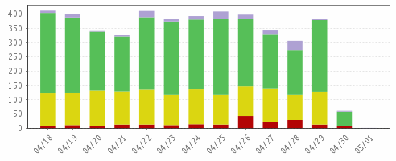

Client Job Status Summary
Server Group=Global Storage Infrastructure | Apr 18, 2012 12:00:00AM - May 01, 2012 03:00:59PM
Client Job Status Summary

Failed
Partial
Successful
Had Mixed Success & Failures